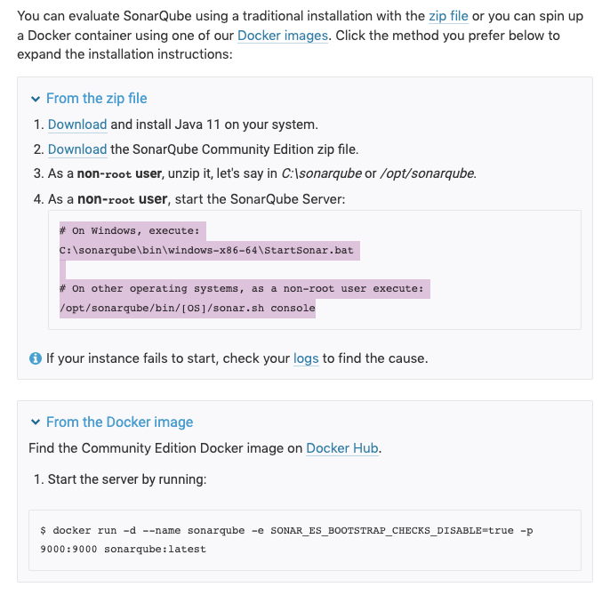

Sonarqube and Bitegarden
Presentation created by Ali Sadykov
Table of Content:
- What is SonarQube?
- What does SonarQube offer?
- How does it work?
- What is BiteGarden?
- How to use BiteGarden?
- What does BiteGarden do?
What is Sonarqube?
"SonarQube is an open-source platform developed by SonarSource for continuous inspection of code quality to perform automatic reviews with static analysis of code to detect bugs, code smells on 29 programming languages."
What does SonarQube offer?


- SonarQube offers reports on duplicated code, coding standards, unit tests, code coverage, code complexity, comments, bugs, and security recommendations.
- SonarQube can record metrics history and provides evolution graphs.
- SonarQube provides fully automated analysis and integration with Maven, Ant, Gradle, MSBuild and continuous integration tools (Atlassian Bamboo, Jenkins, Hudson, etc.)
How does it work?
- You can try installing your own version of sonarqube using this link
SonarQube offers a user to run either from a Docker Container or from a locally installed instance
Usability Example:
- Special thanks to: TechnologyFirst
- Link: https://www.youtube.com/embed/ezMqyPbwxn4?
What is BiteGarden?
"BiteGarden is a group of developers who made a special plugin for SonarQube, their piece of software makes sure the code is well written and is secure to use in production environment"
What does Bitegarden do?
Bitegarden allows the creation of
- Customisable Metrics Reporting
- PDF-Based Reports
- Executive Summary
- Report Customisation
- Excel-Based Reports
How to use BiteGarden
THE END
Presentation made possible with Reveal.js and by Ali Sadykov